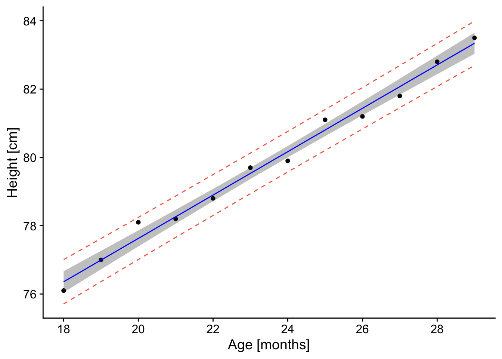
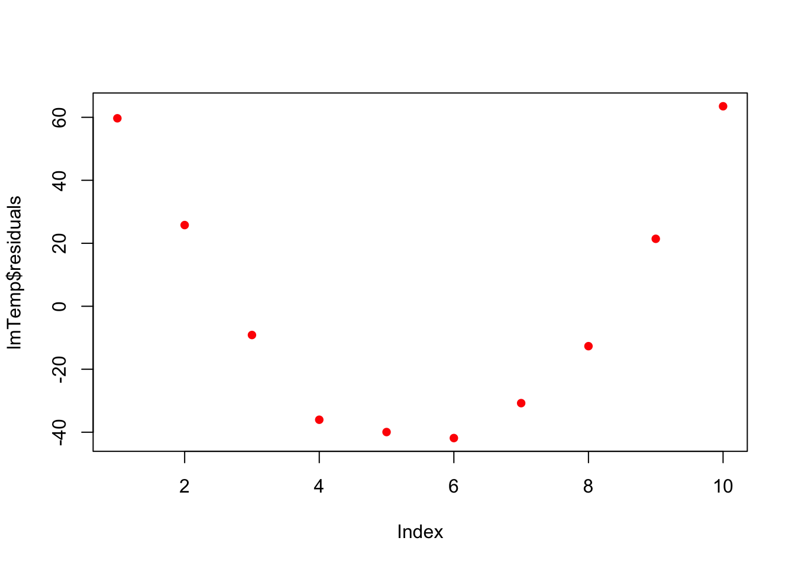
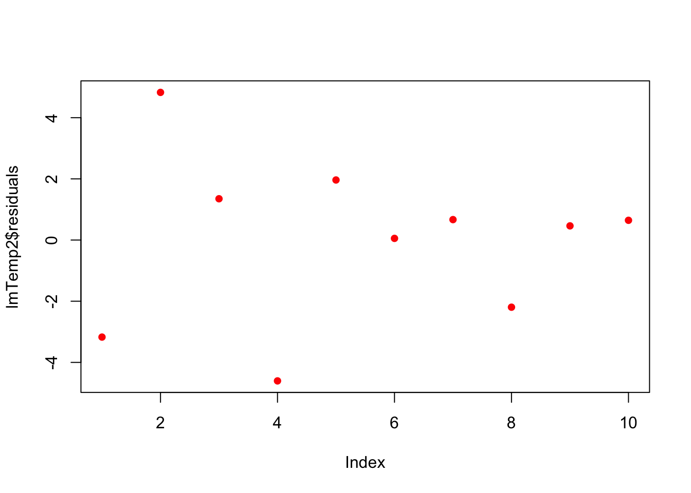
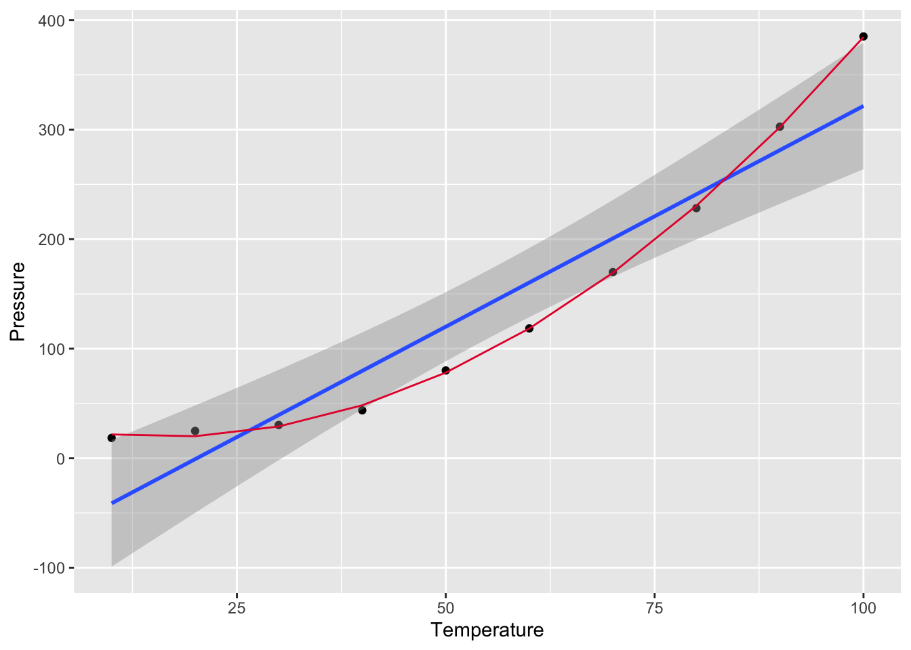

8 Introduction to Linear Regression in R
8.1 Objectives
This week our goals are to be able to:
- Linear Regression Fundamentals:
- Understand the basics of linear regression analysis in R.
- Learn how to interpret model output and assess model performance.
- Assumptions and Diagnostics:
- Identify and understand the assumptions of linear regression.
- Gain proficiency in diagnosing model assumptions using plots and tests.
- Workflow and Data Preparation:
- Develop a structured workflow for conducting linear regression analysis.
- Learn techniques for data preparation and visualization.
- Data Transformation and Model Improvement:
- Explore methods for transforming data to meet model assumptions.
- Understand how data transformations can enhance model fit.
- Interpretation of Diagnostic Plots:
- Learn to interpret diagnostic plots to assess model adequacy.
- Prediction and Inference:
- Use regression models for prediction and inference.
- Understand how to compute and interpret confidence and prediction intervals.
8.2 Reading
- Chapter 3 A Review of R Modeling Fundamentals from Tidy Modeling with R by Max Kuhn and Julia Silge
8.3 Active Package Libraries
This tutorial is derived from https://www.datacamp.com/community/tutorials/linear-regression-R
8.4 Linear Regression
R-studio provides the ability to create linear regressions easily, sometimes too easily. While this is not meant to be a substitute for a statistics course, the objective in this short tutorial is to develop a workflow approach that allows you to test the validity of regressions.

8.4.2 Workflow:
- Read in data
- Plot data & visualize linearity
- Transform data as appropriate
- Create linear model using
lmfunction.
- Assess assumption 1
- review t-values from linear model summary. If the slope and intercept values have resulting |t| > 2, then they are significant.
- review leverage/influence of data points on regression. When data points have high leverage, one of 3 options come into play: (1) Someone made a recording error, (2) Someone made a fundamental mistake collecting the observation; or (3) The data point is perfectly valid, in which case the model cannot account for the behavior
- Test for homoscedasticity
- Assess assumption 3, the variability in the residuals does not vary over the range of predicted values
if fails, transform data or choose an alternate model/independent variable
- Test for bias
- Assess assumption 4, e values generally plot equally above and below zero
- Test for normality
8.4.3 Example
8.4.3.2 Step 2. Plot data & visualize linearity
## here you can either start a ggplot or just use the simple plot command. Since we're practicing ggplot, let's stick with this.
p <- ggplot(ageandheight, aes(age,height)) + geom_point() +
cowplot::theme_cowplot() + ## adds theme
scale_y_continuous(breaks=seq(76,84,2)) + ## changes scale to min and max with prescribed spacing
scale_x_continuous(breaks=seq(16,31,2)) +
ylab("Height [cm]") + ## adds y-label with units
xlab("Age [months]")
p
Check: The resulting plot looks fairly linear; let’s proceed!
8.4.3.4 Step 4. Linear model
Create linear model using the lm function.
- Assess assumption 1
- review t-values from linear model summary. If the slope and intercept values have resulting |t| > 2, then they are significant.
- review leverage/influence of data points on regression. When data points have high leverage, one of 3 options come into play:
(1) Someone made a recording error,
(2) Someone made a fundamental mistake collecting the observation; or
(3) The data point is perfectly valid, in which case the model cannot account for the behavior
##
## Call:
## lm(formula = height ~ age, data = ageandheight)
##
## Residuals:
## Min 1Q Median 3Q Max
## -0.27238 -0.24248 -0.02762 0.16014 0.47238
##
## Coefficients:
## Estimate Std. Error t value Pr(>|t|)
## (Intercept) 64.9283 0.5084 127.71 < 2e-16 ***
## age 0.6350 0.0214 29.66 4.43e-11 ***
## ---
## Signif. codes: 0 '***' 0.001 '**' 0.01 '*' 0.05 '.' 0.1 ' ' 1
##
## Residual standard error: 0.256 on 10 degrees of freedom
## Multiple R-squared: 0.9888, Adjusted R-squared: 0.9876
## F-statistic: 880 on 1 and 10 DF, p-value: 4.428e-11Check: |t-values| >> 2, proceed
## review leverage/influence of data points on regression. Use plot of Cook's D, evaluate subset of Cooks D above threshold, and evaluate DFFITS (another influence diagnostic)
plot(cooks.distance(model.lm), pch = 16, col = "blue") #Plot the Cooks Distances.
There are a few high points here at the beginning. Let’s see if any fall outside of the critical value on the F-distribution (the qf function determines the critical value for our number of observations and number of coefficients).
n <- length(model.lm$residuals) ## n = the number of observations
p <- length(model.lm$coefficients) # p = the number of coefficients
subset(cooks.distance(model.lm), cooks.distance(model.lm) > qf(0.1, p, n - p, lower.tail = FALSE)) # determines if there are any flagged observations from Cooks D## named numeric(0)For SLR (simple linear regression) with more than about 30 observations, the critical value for D would be about 2.4. So we don’t get any values out, hence the named numeric(0), zero observations were flagged.
What about DFFITS (difference in fits with and without that point)?
subset(dffits(model.lm), dffits(model.lm) > 2 * sqrt(p / n)) # determines if there are any flagged observations from DFFITS## 3
## 1.127423Now, observation 3 was identified as having higher influence on the fit than other points. Consider options 1-3 described in workflow. Is there something wrong with this point?
8.4.3.5 Step 5. Test for homoscedasaticity
# Here, the which variable provides the ability to create 4 plots of interest: "Residuals vs Fitted", "Normal Q-Q", "Scale-Location", "Cook's distance", "Residuals vs Leverage"
# To test for homoscedasticity, review plot of standardized residuals
plot(model.lm, which = 3, ask = FALSE)
Check: Variability is not significant over fitted values


8.4.4 Predicting values: Applications of linear models
The following workflow provides predicted values and confidence intervals of these estimates for new values based on a linear regression model. The final steps are to create a plot with uncertainty bounds and the ability to predict a value and associated uncertainty in that predicted value.
8.4.4.1 Workflow:
Confidence intervals are computed using the predict command:
Prediction intervals are computed as follows:
Prediction intervals are always greater than confidence intervals. While they include the uncertainty in the regression coefficients, the slope and intercept, they also includes the unexplained variability in y within the original data.
8.4.4.2 Example
## Warning in predict.lm(model.lm, interval = "predict"): predictions on current data refer to _future_ responses# Use model to create confidence intervals
model.confidence <- predict(model.lm, interval = "confidence")
colnames(model.confidence) <- c("cfit", "clwr", "cupr") #rename columns
# Create dataset that merges dataset
data.all <- cbind(ageandheight,model.predict, model.confidence)
# Create ggplot
p <- ggplot(data.all, aes(x = age, y = height)) +
geom_point() + # adds points
geom_line(aes(y=lwr), col = "coral2", linetype = "dashed") + #lower prediction interval
geom_line(aes(y=upr), col = "coral2", linetype = "dashed") +
geom_ribbon(aes(ymin=clwr,ymax=cupr),alpha=0.3) + # confidence band
geom_line(aes(y=fit), col = "blue") + # confidence band
theme_cowplot() +
ylab("Height [cm]") +
xlab("Age [months]") +
scale_y_continuous(breaks=seq(76,84,2)) +
scale_x_continuous(breaks=seq(16,31,2))
p
The resulting plot contains the confidence and prediction intervals over the range of x-values.
8.5 Now, let’s say you want to predict a y-value for a given age.
When making predictions, you’ll want to use predict and not confidence. The rationale is that this approach provides a better sense of incorporating not just the confidence in the intercept and slope, but also the unexplained variation in the y-values.
a <- data.frame("age" = 18.1) # key here is to label column name the same as what is used in the model.lm!
value.predict <- predict(model.lm, newdata=a, interval = "predict", level = 0.95)
value.predict## fit lwr upr
## 1 76.42119 75.77412 77.06826Thus, for an age of 18.1 months, the predicted height is 76.4 (75.77 - 77.1, alpha = 95%).’
8.6 Example 2 from reading
# Read in data
press <- read_excel("data/pressure.xlsx")
# Plot data
p <- ggplot(press,aes(Temperature,Pressure)) + geom_point() + geom_smooth(method = "lm", level = 0.95)
p## `geom_smooth()` using formula = 'y ~ x' What do you notice??? Are the residuals going to be random? Does negative pressure make sense?
What do you notice??? Are the residuals going to be random? Does negative pressure make sense?
lmTemp = lm(Pressure~Temperature, data = press) #Create the linear regression
plot(lmTemp$residuals, pch = 16, col = "red")
So what to do? Transformation!We will learn more about these on Wednesday.
press$x2 <- press$Temperature^2
lmTemp2 = lm(Pressure~Temperature + I(Temperature^2), data = press) #Create the linear regression
plot(lmTemp2$residuals, pch = 16, col = "red")
##
## Call:
## lm(formula = Pressure ~ Temperature + I(Temperature^2), data = press)
##
## Residuals:
## Min 1Q Median 3Q Max
## -4.6045 -1.6330 0.5545 1.1795 4.8273
##
## Coefficients:
## Estimate Std. Error t value Pr(>|t|)
## (Intercept) 33.750000 3.615591 9.335 3.36e-05 ***
## Temperature -1.731591 0.151002 -11.467 8.62e-06 ***
## I(Temperature^2) 0.052386 0.001338 39.158 1.84e-09 ***
## ---
## Signif. codes: 0 '***' 0.001 '**' 0.01 '*' 0.05 '.' 0.1 ' ' 1
##
## Residual standard error: 3.074 on 7 degrees of freedom
## Multiple R-squared: 0.9996, Adjusted R-squared: 0.9994
## F-statistic: 7859 on 2 and 7 DF, p-value: 1.861e-12# plot fitted smooth line
lmTemp2plot<- data.frame(lmTemp2$fitted.values,press$Temperature)
p <- p + geom_line(data = lmTemp2plot, aes(x = press.Temperature,y=lmTemp2.fitted.values),color = '#E51837')
p## `geom_smooth()` using formula = 'y ~ x'